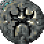
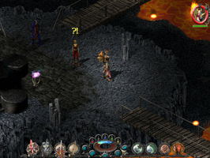
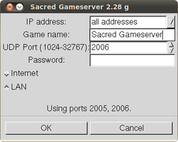

SACRED Gold
Dieser Artikel wurde für die folgenden Ubuntu-Versionen getestet:
Dieser Artikel ist mit keiner aktuell unterstützten Ubuntu-Version getestet! Bitte diesen Artikel testen und das getestet-Tag entsprechend anpassen.
Zum Verständnis dieses Artikels sind folgende Seiten hilfreich:

SACRED Gold  beinhaltet das Grundspiel sowie die Erweiterung Sacred: Underworld. Dem Spieler stehen in diesem Rollenspiel acht verschiedene Charakterklassen zur Verfügung, mit denen die Fantasywelt Ancaria erkundet werden kann. Zusätzlich bietet die Möglichkeit im Netzwerk- oder Internetspiel dieses Abenteuer zu bestehen.
beinhaltet das Grundspiel sowie die Erweiterung Sacred: Underworld. Dem Spieler stehen in diesem Rollenspiel acht verschiedene Charakterklassen zur Verfügung, mit denen die Fantasywelt Ancaria erkundet werden kann. Zusätzlich bietet die Möglichkeit im Netzwerk- oder Internetspiel dieses Abenteuer zu bestehen.
Für die Installation wird ein Installer von LGP genutzt, welcher sich auf der Spiele-DVD befindet.
|  |
| Spielszene |
Installation¶
CD¶
Um SACRED Gold für Linux zu installieren [2], führt man das Skript setup.sh vom Installationsmedium im Terminal [1] aus:
./setup.sh
Bei der Installation den Anweisungen folgen. Das Spiel wird im angegebenen Ordner installiert. Anschließend Updates einspielen. Das Spiel kann über "Anwendungen -> Spiele -> Sacred" gestartet werden. Beim ersten Spielstart muss der Spielecode eingegeben werden, welcher auf dem Booklet zu finden ist.
Desura¶
Das Spiel kann über die Internetseite oder den Client zur Spieleliste hinzugefügt und gestartet werden [4].
Ubuntu Software-Center¶
Das Spiel kann über das Ubuntu Software-Center erworben werden. Die zur Installation [3] benötigten Daten werden per E-Mail übermittelt.
Netzwerk¶
Im Startbildschirm "Multiplayer" auswählen und die gewünschte Spielform starten.
|  |
| Server |
Server¶
Einen eigenen Server für das Netzwerkspiel startet man über "Anwendungen -> Spiele -> Sacred Server".
Tastenkürzel¶
| SACRED | |
| Taste(n) | Funktion |
| Alt + ⏎ | Wechsel zwischen Fenster- und Vollbildmodus. |
| Strg + G | Mauszeiger fangen/entlassen |

Infobox¶
| SACRED Gold | |
| Genre: | Rollenspiel |
| Sprache: |  |
| Veröffentlichung: | 2009 |
| Publisher: | Linux Game Publishing |
| Systemvoraussetzungen: | mind. 1.0 GHz x86 Prozessor / 256 MB RAM / 3,7 GB freier Festplattenspeicher / DVD-ROM / 3D-Grafikkarte >= 32MB RAM |
| Medien: | DVD (1) / Download |
| Strichcode / EAN / GTIN: | 835551000182 |
| Läuft mit: | nativ |
- Erstellt mit Inyoka
-
 2004 – 2017 ubuntuusers.de • Einige Rechte vorbehalten
2004 – 2017 ubuntuusers.de • Einige Rechte vorbehalten
Lizenz • Kontakt • Datenschutz • Impressum • Serverstatus -
Serverhousing gespendet von